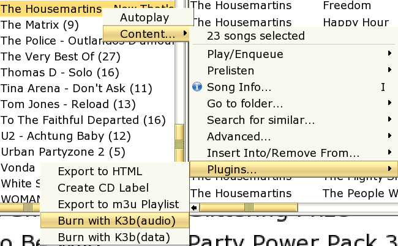

How do we define easy and efficient?
What about measuring the time and ease of use for the following use case:
Yammi's mission
Make music management on your computer as easy and efficient as it should be.
 metric
metric
How do we define easy and efficient?
What about measuring the time and ease of use for the following use case:
 solution
solution
Let's see how we do this with Yammi:
Step 1: search for the song
Press "ESC" from anywhere in Yammi to clear the search field and set the focus to it.
Type "It's build Hausmartins"
=> 3-5 seconds (depending on how fast you type)
Step 2: find the song
Look at the best matches list that Yammi automatically provides
=> 1-2 seconds (depending on how fast you look, the search takes much less than a second)
Step 3: play as next song
Choose "Play/Enqueue" -> "Enqueue as next" from the song context menu
or the corresponding keyboard shortcut.
=> 1-3 seconds
Step 4: find all songs on the same album
Choose "Go to folder" -> "album" from the song context menu
=> 3 seconds
Step 5: burn an audio CD with that album

Choose "Content" -> "Plugins" -> "Burn to audio CD" from the folder context menu.
Start burning process in K3B (which starts up with the desired songs added automatically).
=> 7 seconds
Results
Fast? Well, less than 30 seconds...
Easy? I think so... (better watch your girlfriend...)
...but? Of course there are other tasks in managing a music collection,
but there's also more behind Yammi... see Yammi's features.
 conclusion
conclusion
Think about your music management.
Do you know exactly which songs you have? ...and which not? And how they are spelled?
How long does it take you to lookup a song and play it?
Ever found yourself digging through your harddisk for a particular song?
In other words: Satisfied with your current music organization?
...well, then keep it! Never change a running system!
Not satisfied? It's not as easy as it should be?
...well, take a closer look at Yammi's features!
Chances are you don't want to miss Yammi's fuzzy search in the future any more...
competition
There are other music managers for linux out there, some of them quite powerful.
The following list is definitely not complete, nor have I tried all of them extensively myself.
Just one tip: lots of people find amarok's features very impressive...
Last update 09/03/2005.